Note to non-wiki readers: This documentation is generated from the Eclipse wiki - if you have corrections or additions it would be awesome if you added them in the original wiki page .
The GEF4 FX component provides useful additions around JavaFX as well as for integrating JavaFX with SWT. It is internally composed out of three modules, namely FX , FX.SWT , and FX.JFace . There are also a couple of undeployed FX Examples and FX SWT Examples.
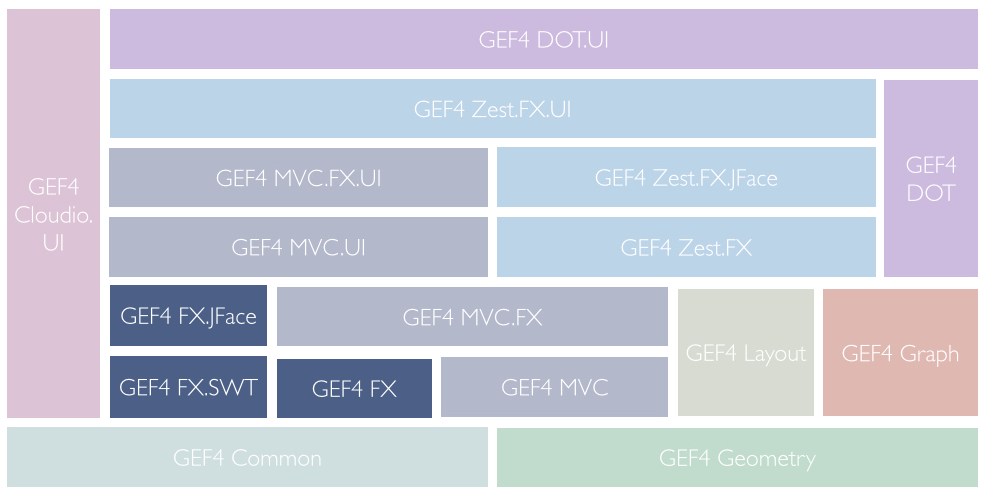
The FX module of GEF4 FX provides enhancements for JavaFX, which can also be used independent of the Eclipse UI, e.g. visual anchors, gesture listeners, a connection implementation, or an IGeometry-based shape implementation.
The {Root} package only provides the bundle activator, FxBundle.
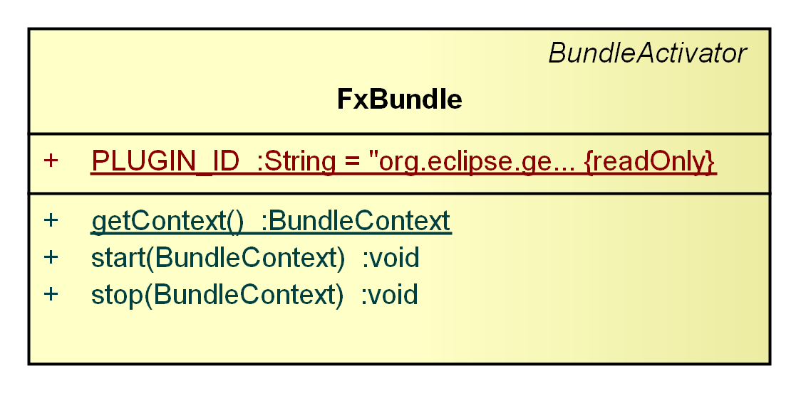
The FxBundle is the bundle activator.
The Anchors package provides a visual anchor abstraction ( IAnchor), a related abstract base implementation ( AbstractAnchor), as well as concrete anchor implementations ( StaticAnchor, DynamicAnchor) to manage dynamic positioning of visuals in dependence of others.
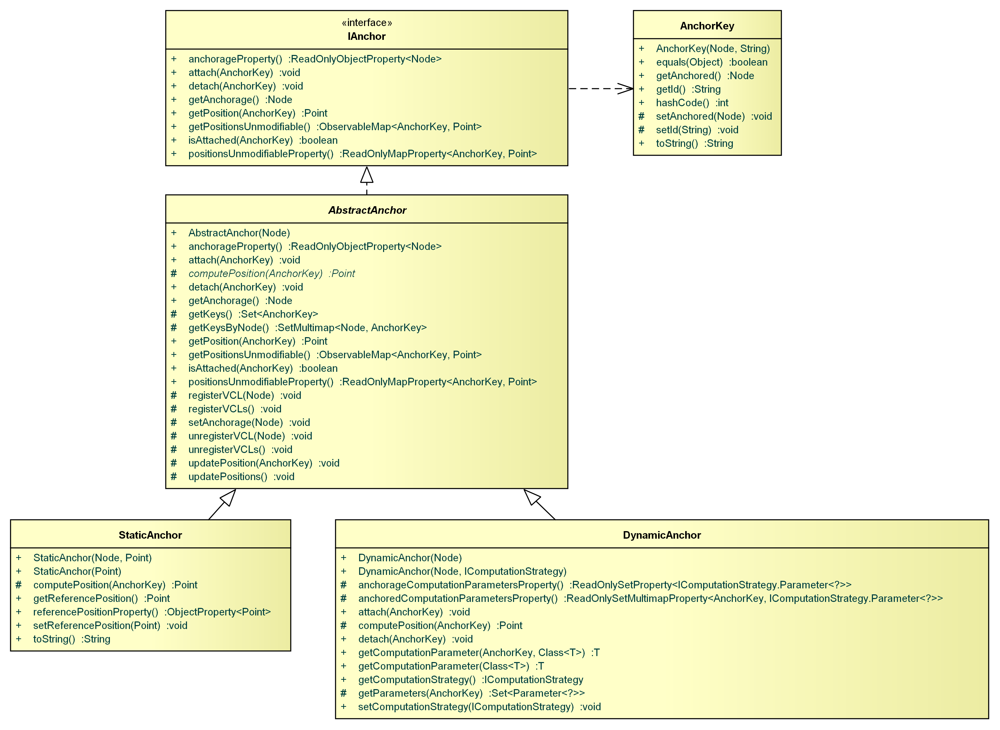
An IAnchor is associated with one
anchorage visual and can provide positions for several
anchored visuals. Every anchored visual, for which a position should be computed by the anchor, has to be
attached to the anchor. In order to allow the computation of different positions for the same visual, the anchored is wrapped in an AnchorKey, which combines a
javafx.scene.Node with a
java.lang.String role. For example, imagine a self-loop (an edge that connects a vertex to itself) where the same visual (the edge) is attached to one anchorage (the vertex) with two different roles: the start of the edge, and the end of the edge.
The abstract base implementation AbstractAnchor triggers a re-computation for an attached AnchorKey when the anchorage visual changes relative to the anchored visual or vice versa. This is realized using a
VisualChangeListener. When an AnchorKey is detached from an IAnchor, no further computations will be performed for that AnchorKey.
The anchorage visual and the positions for the anchoreds are managed using JavaFX Properties ( Using JavaFX Properties and Binding), i.e. you can register change listeners and realize bindings based on those properties.
The StaticAnchor is, conceivably, the most simple anchor implementation. It provides an anchor position based on a static reference position (either scene-global, or relative to its anchorage visual). This type of anchor proved itself useful as a placeholder when a position currently does not depend on an anchorage visual, but eventually will.
The DynamicAnchor support calculation of 'dynamic' positions for anchored visuals, delegating the calculation to a respective IComputationStrategy, which can be exchanged.
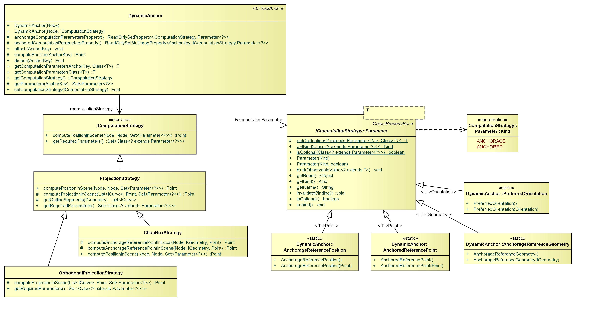
The IComputationStrategy's position computation can be based on an arbitrary number of Parameters, which may either depend on the anchorage visual (static) or on the anchored visual (dynamic). These parameters are maintained by the DynamicAnchor and need to be provided by clients. As they are implemented as object properties, their values may simply by provided through JavaFX bindings:
getComputationParameter(AnchorageReferenceGeometry.class).bind(new ObjectBinding<IGeometry>() {
{
bind(anchorage.layoutBoundsProperty());
}
@Override
protected IGeometry computeValue() {
return NodeUtils.getShapeOutline(anchorage);
}
});
There are three concrete computation strategies, which may be used in different scenarios. The ProjectionStrategy computes the closest projection of a given anchored reference point to a reference anchorage geometry outline (usually the geometric or visual outline). The ChopBoxStrategy is a specific projection strategy that computes the intersection between a line through the center of the anchorage reference geometry and the given anchored reference point and the outline of the anchorage reference geometry. The OrthogonalProjectionStrategy is another specialization that computes the closest horizontal or vertical projection of the anchored reference point to the anchorage geometry outline.
The
Gestures package provides abstractions to compose related atomic JavaFX events into gestures, i.e.
AbstractMouseDragGesture,
AbstractPinchSpreadGesture,
AbstractRotateGesture, and
AbstractScrollGesture. A gesture is implemented as an abstract class, with different abstract methods for the various parts of the gesture, i.e. press(), drag(), and release() in the case of an
AbstractMouseDragGesture. Besides, every gesture provides a setScene() method to register/unregister JavaFX event listeners.
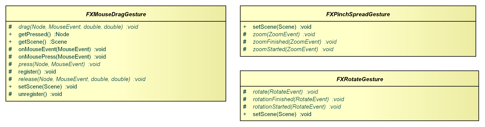
This AbstractMouseDragGesture reports mouse press, drag, and release events.
This AbstractPinchSpreadGesture reports touch pinch and spread events, i.e. moving two fingers towards each other or away from each other.
This AbstractRotateGesture reports touch rotate events, i.e. dragging two fingers around each other.
This AbstractScrollGesture reports scroll events.
The Listeners package provides a VisualChangeListener, which can be used to recognize visual changes of one observed javafx.scene.Node visual relative to an observer visual.
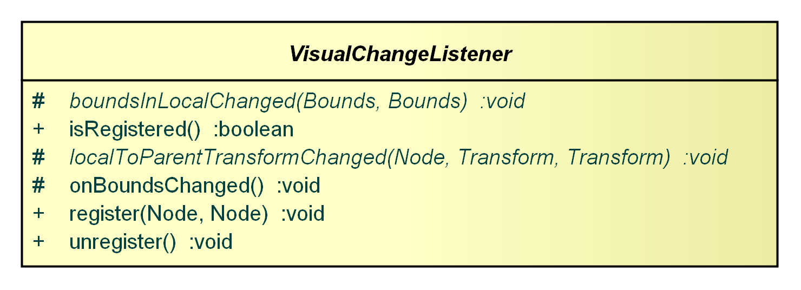
A VisualChangeListener examines a visual's bounds-in-local and local-to-parent-transform properties (JavaFX Properties) and reports all related visual changes. A bounds-in-local change occurs when the observed visual's effect, clip, stroke, local transformations, or geometric bounds change. A local-to-parent-transform change occurs when the observed visual undergoes a transformation change. Transformation listeners are registered for all visuals in the hierarchy up to (but excluding) the common parent of observed and a respective observer visual, so that all changes relative to the observer visual are recognized.
The VisualChangeListener is realized as an abstract class (similar to the
Gestures), which has to be subclassed by clients to provide concrete reactions to the visual changes.
The Nodes package provides
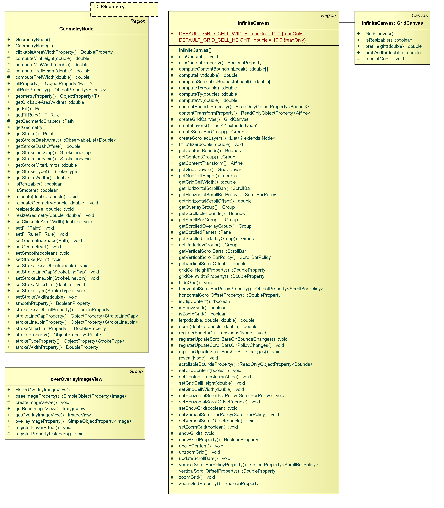
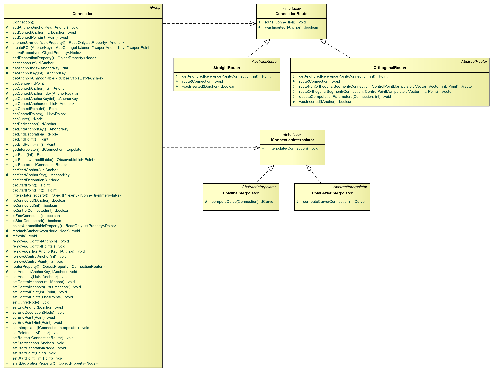
The GeometryNode is a specific
javafx.scene.layout.Region that is capable of displaying an
org.eclipse.gef4.geometry.planar.IGeometry. In contrast to a
javafx.scene.shape.Shape its resizable.
GeometryNode<RoundedRectangle> n = new GeometryNode<>(); // A GeometryNode has the same visible properties like a javafx.scene.shape.Shape... n.setFill(Color.RED); n.setStrokeWidth(5); n.setStrokeType(StrokeType.OUTSIDE); // ... but it can either be relocated/resized based on the geometry (excluding stroke) ... n.setGeometry(new RoundedRectangle(30, 40, 30, 40, 20, 20)); n.relocateGeometry(50, 60); n.resizeGeometry(50, 60); // ... or based on the layout bounds (including stroke) n.relocate(50, 60); n.resize(50, 60);
The InfiniteCanvas is an alternative to the
javafx.scene.control.ScrollPane. It consists of multiple layers: underlay group, scrolled underlay group, content group, scrolled overlay group, overlay group.
The InfiniteCanvas determines scrollable bounds and content bounds. Scrollbars will be automatically shown in case the content bounds exceed the canvas bounds.
The HoverOverlayImageView displays a base image, for which a mouse hover effect is realized that displays an overlay image instead of the base image during hovering. Transitioning from one image to the other is done by gradually changing the opacities of both images. In the given example, the base image is the grey X and the overlay image is the red X.
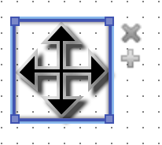
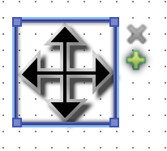
The Connection is an implementation of a connection with two endpoints and an arbitrary number of way-/control-points. One of the endpoints is referred to as the start point, the other one is referred to as the end point. The positions for endpoints and waypoints are computed using anchors, i.e. an Connection provides one
AnchorKey per point and manages one
IAnchor per point. However, the API also allows directly specifying coordinates for each point, in which case a
StaticAnchor is created internally.
A Connection can have a start decoration and an end decoration which are displayed at the start point, or end point, respectively. Decorations can be used to display an arrow at one end of a connection, for example.
An IConnectionRouter receives the coordinates of all points of the connection (start point, way points, end point) and may insert additional (implicit) points to satisfy certain routing constraints. Currently, two connection routers are provided: 1) the StraightRouter (default), and 2) the OrthogonalRouter.
A Connection manages a
javafx.scene.Node (a
GeometryNode by default), which is referred to as the curve node. The updating of the curve node based on the curve's points is delegated to an IConnectionInterpolator. It is also responsible for placing the curve's decorations as well as for clipping the decorations. Currently two interpolators are provided: 1) the PolylineInterpolator and 2) the PolyBezierInterpolator. The first one computes a
org.eclipse.gef4.geometry.planar.Polyline (only straight line segments) from the given points while the second one computes a
org.eclipse.gef4.geometry.planar.PolyBezier (consecutive Bezier curves with smooth continuity) from the given points.
The NodeUtils class contains utility functionality, such as picking nodes at a current position on the scene graph, and performing local-to-parent, local-to-scene, parent-to-local, and scene-to-local transformations of geometries (GEF4 Geometry).
The CursorUtils provides utility functions related to cursors. It can be used for querying the current mouse pointer location for for forcing a cursor update.
The Geometry2Shape and Shape2Geometry utility classes provide utilities to infer
GEF4 Geometry abstractions from a
javafx.scene.shape.Shape and vice versa.
The FX.SWT module of GEF4 FX provides enhanced support for integrating JavaFX with SWT.
The Canvas package provides a replacement for the javafx.embed.swt.FXCanvas, adding support for various JavaFX/SWT integration functionality.
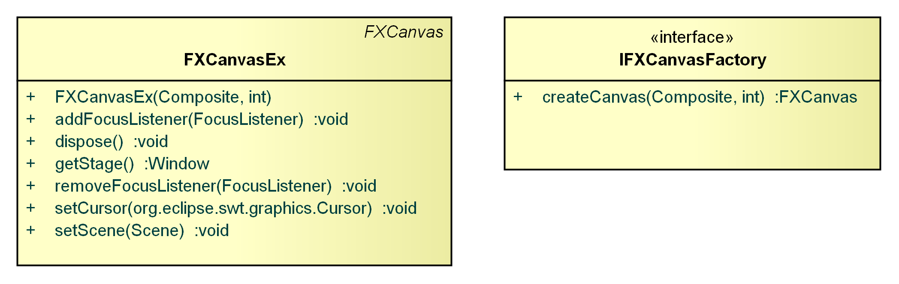
The FXCanvasEx is a replacement for the
javafx.embed.swt.FXCanvas, providing support for various functionality which is missing. The FXCanvasEx forwards SWT GestureEvents (touch events) to JavaFX, notifies all SWT FocusListeners (additional to forwarding them to JavaFX), and supports changing the SWT Cursor based on the
javafx.scene.Cursor.
The IFXCanvasFactory handles the construction of an
javafx.embed.swt.FXCanvas to render the JavaFX scene graph.
The Controls package provides a counterpart to the JavaFX/SWT integration, i.e. embedding SWT Controls into a JavaFX scene graph.
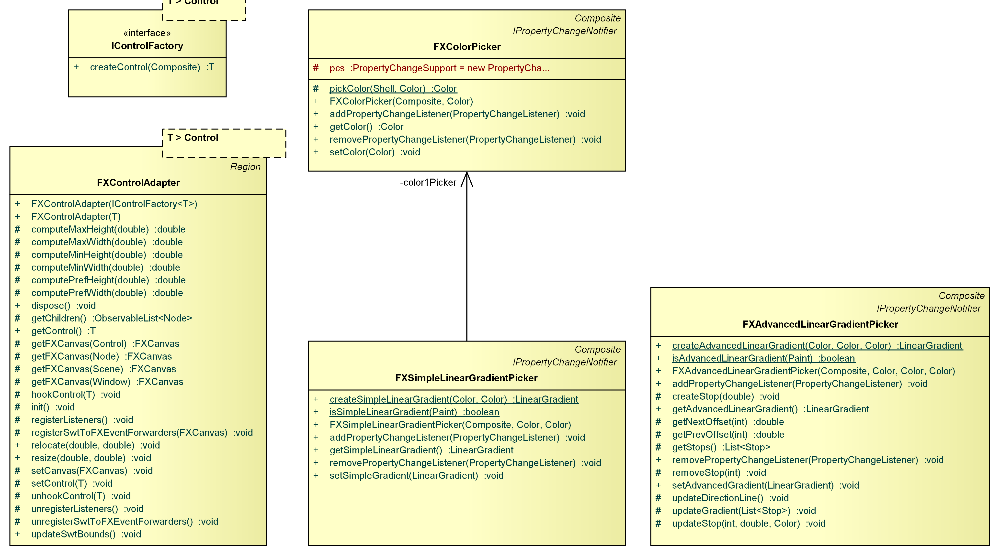
The FXControlAdapter extends
javafx.scene.layout.Region and allows to embed an SWT Control into a JavaFX scene graph. The control will automatically be re-created using an
IControlFactory whenever the JavaFX scene graph changes, and its bounds will be updated whenever the FXControlAdapter is resized or relocated.
An IControlFactory is responsible for creating an SWT Control (for an
FXControlAdapter).
The FXColorPicker provides an SWT control which uses the system's
org.eclipse.swt.widgets.ColorDialog to pick a new JavaFX color.
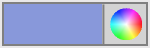
The FXSimpleLinearGradientPicker provides an SWT control which displays two FXColorPicker to specify a simple JavaFX linear gradient.
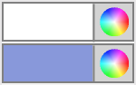
The FXAdvancedLinearGradientPicker provides an SWT control which displays/allows the manipulation of an advanced linear gradient (i.e. more than 2 stops).
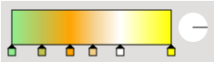
The Gestures package provides support for the conversion of SWT GestureEvent (touch events) to corresponding JavaFX events when embedding a JavaFX scene graph into an SWT application (via javafx.embed.swt.FXCanvas).
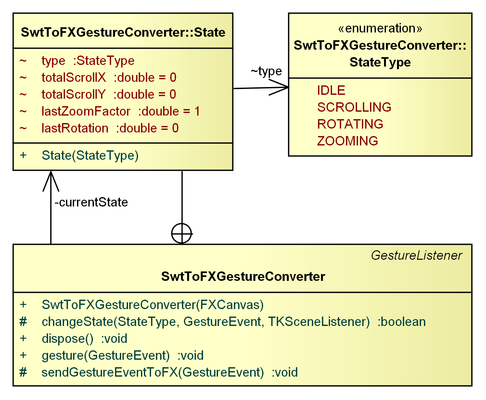
The SWTToFXGestureConverter can be used to register listeners on an
javafx.embed.swt.FXCanvas for an automatic conversion of SWT GestureEvents to corresponding JavaFX events (
javafx.scene.input.RotateEvent,
javafx.scene.input.ScrollEvent,
javafx.scene.input.SwipeEvent,
javafx.scene.input.ZoomEvent). It is internally used by
FXCanvasEx to transfer gesture events from SWT to JavaFX.
The FX.JFace module of GEF4 FX provides enhanced support for integrating JavaFX with JFace.
The {Root} package provides cell editors and corresponding dialogs to specify JavaFX properties.
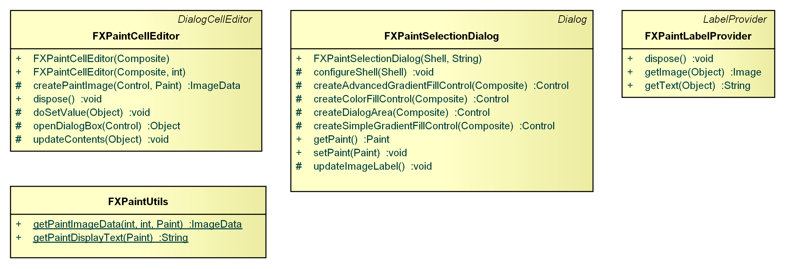
The FXPaintCellEditor is a
org.eclipse.jface.viewers.DialogCellEditor extension, which displays a currently selected JavaFX Paint and offers a button to change if via an
FXPaintSelectionDialog.
The FXPaintLabelProvider is a
org.eclipse.jface.viewers.LabelProvider extension, which can be used to display a JavaFX Paint (color or gradient) value. It is used by the
FXPaintPropertyDescriptor.
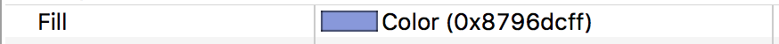
The FXPaintSelectionDialog is a
org.eclipse.jface.dialogs.Dialog extension, which provides a menu to select a JavaFX Paint (color or gradient). It is used by the FXPaintCellEditor.
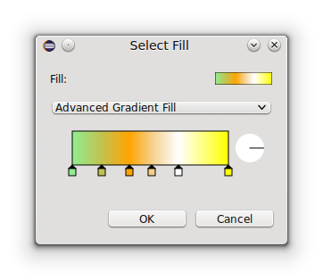